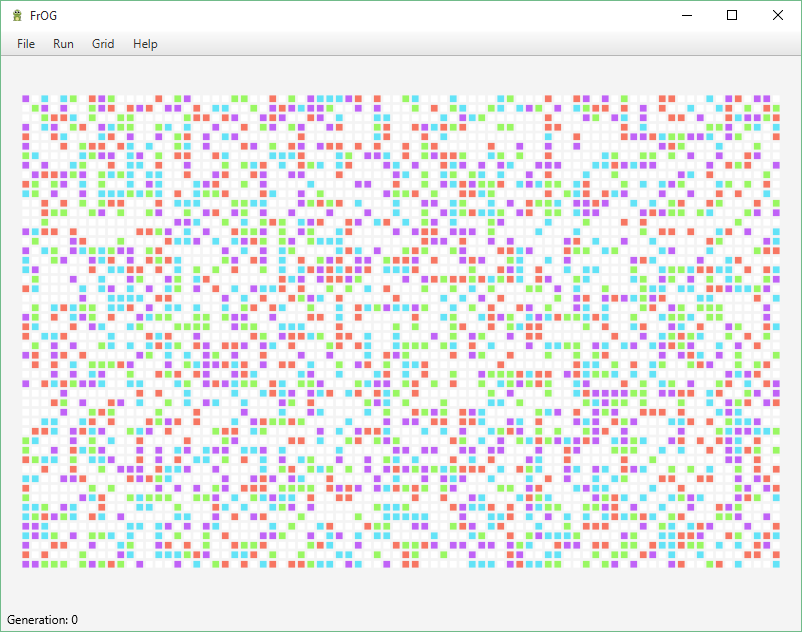
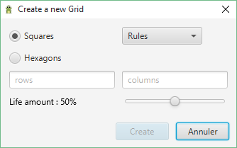
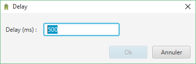

Before you start...
- If you want to run the .jar, make sure that Java 8 is properly installed on your computer.
- Mind that the interface uses JavaFX, a full jdk envioronment is requiered if you want to be able to compile the sources.
Informations
This software was developed in about 2 weeks, the purpose is to implements cellulare automata ; it implements various rules (Conway, Day & Night, HighLife, Fredkin, Immigration, QuadLife) and different types of grids (Square, Hexagon, Triangles (not available in GUI mode)). It uses text file to save/load data, and allows to export as .png file.
Launch the application
Use .jar
If you want to run the .jar, use following command:
java -jar FrOG.jar
Compile from sources
If you want to compile the sources : (in the root 'Makefile' directory)
make
Then run the main class :
java FrOG

Grid manipulations
New grid
File > New (Ctrl + N)

Options :
- Type of the grid :
- Rules :
- Conway, a cell is born if it has 3 neighbors alive, a living cell survives if it has 2 or 3 neighbors alive, otherwise she dies.
- Day & Night, a cell is born if it has 3, 6, 7 or 8 neighbors alive and survives if it has 3, 4, 6, 7 or 8 neighbors alive.
- HighLife, a cell is born if it has 3 or 6 neighbors and survives if it has 2 or 3 neighbors.
- Fredkin, the next state of a cell is dead if the number of its alive neighbors is even, otherwise it is alive.
- Immigration, the rules are identical to Conway, except that there are two alive states (two colors) and that any newborn cell is colored to the majority color of its 3 living neighbors.
- QuadLife, the rules are identical to Conway, except that there are four alive states (four colors) and that any newborn thanks to four cells with four different states, it takes the remaining state, otherwise it is colored to the majority color of its 3 living neighbors.
- Rows
- Columns
- Life amount, 0 -> 1
Clear/Clean
Use Grid>Clear/Clean to clear the grid (and reset the generation counter)
Draw
Use the mouse (click or drag) to draw on the grid ; it draws (i+1) state (if ordinal(currentState) = i).
Save/Load/Export
Text file
core.grid.DefaultGrid
10 10
Conway
. . . O . . O . . .
. . . O . O O . . O
O O O O . . . O O .
. O . . . O O O . .
O . O . . O . O . .
. O O O O . . . . O
O . O . . . . O . .
. O O O O O O O . O
. O . . O O . O O .
O . . O . O . O O .
Grid are saved in text files, with grid type, size, and rules informations.
PNG
To export as .png file : File > Export (Ctrl+E)
Running
Run (Ctrl + R)
Delay (Ctrl + R)

Pause (Ctrl + R)